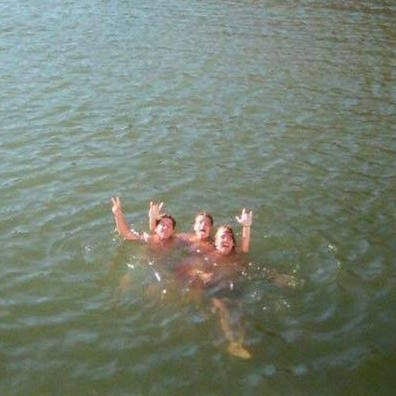
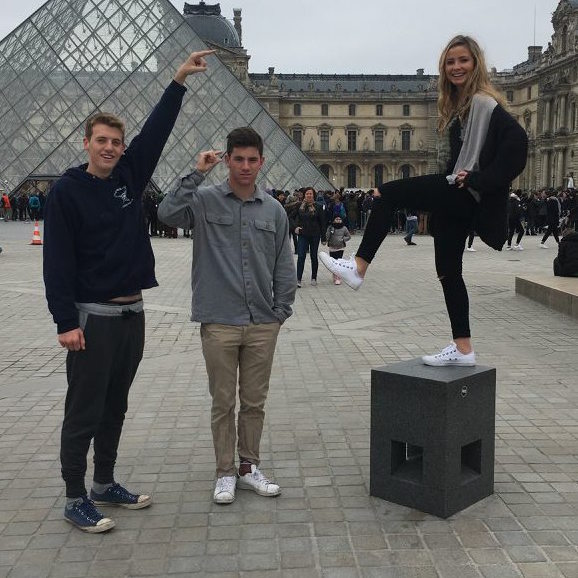

Christopher Hinrichs
Student and Developer
about
My name is Christopher Hinrichs and I'm a Third-Year Computer Science major currently studying at UC Berkeley. I was born and raised in Menlo Park, California, a place that allowed my love for technology and computer science to not only grow, but flourish. While this love for technology and computer science has continued to grow at Berkeley, my time at college has also given me the opportunity to develop my eye and appreciation for good design, something I have spent more time learning about and developing a passion for in my recent college years.


education

- UC Berkeley Class of 2018
- Intended B.A Computer Science
current employment
- Stroll Health
- Software Engineer Intern
I am current employed as a Software Engineer Intern at Stroll Health, a Berkeley based health startup. Stroll Health is focused on enhancing healthcare value by providing an integrated referral management application that includes automatic insurance verification, out-of-pocket cost predictions, clinical decision support, prior authorization, real-time scheduling, and effective patient reminders. I am currently working on implementing front-end features, bug fixes, and testing through HTML, CSS, Javascript, and React.
contact
- Christopher Hinrichs
- chinrichs@berkeley.edu
I am actively seeking Software Engineering and/or Product Management internships for Summer 2017. Please feel free to reach out to me anytime!